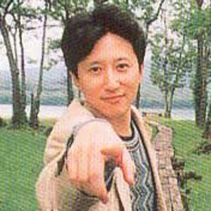

About JoJo
Part 1/2/3
Creator
Araki is often commented on for his unchanging youthful demeanor over the years. He cites training and swimming at the gym and Hitomebore rice as methods for staying fit while over the age of 50. In his 2007 Eureka Interview, he is complimented by Japanese psychologist and critic, Tamaki Saito, but states that the main reason he switched to a monthly serialization was from no longer being able to handle the weekly schedule. Araki has revealed that after he was operated for gastroenteritis.
Araki realized that he could no longer completely devote himself to his manga and sought to enjoy life more and practice other activities such as travelling or cooking.Araki is well known for his position on staying healthy. He enjoys going on walks and riding a bike, particularly to Japanese shrines, and has commended it as his coping mechanism when exhausted from work. He considers exercise as a great way to discipline one's self and that carrying too many things can be a burden; Araki will typically only carry a coat, water, and an iPod when going out.